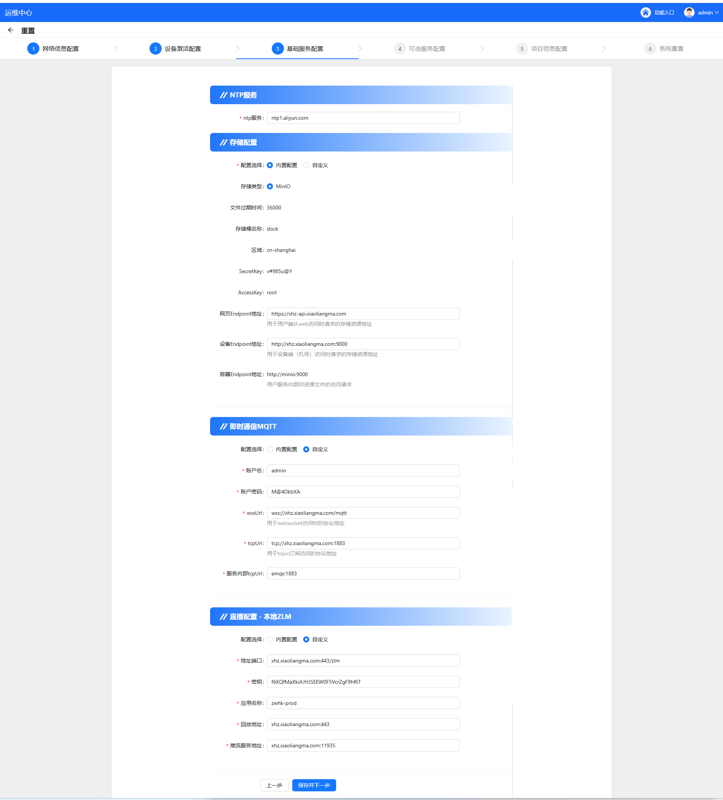

新增提示
需要王晓再次确认。
该服务用于机场调用，若是修改，相对应的机场需要重启才能生效使用，请谨慎修改
该配置用于机场获取的图片、视频数据存放，若是修改，需要重启服务，请谨慎修改
该模块配置用于机场上云使用，若是修改，若是重启需要10分钟左右，且机场需要重新设置机场上云方可使用，请谨慎修改
该模块用于机场直播使用，若是修改，重启服务需要10分钟左右，请谨慎修改
配置管理
新增交互：点击标题跳转到对应的模块信息